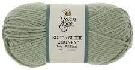
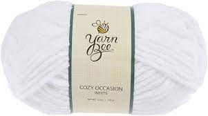
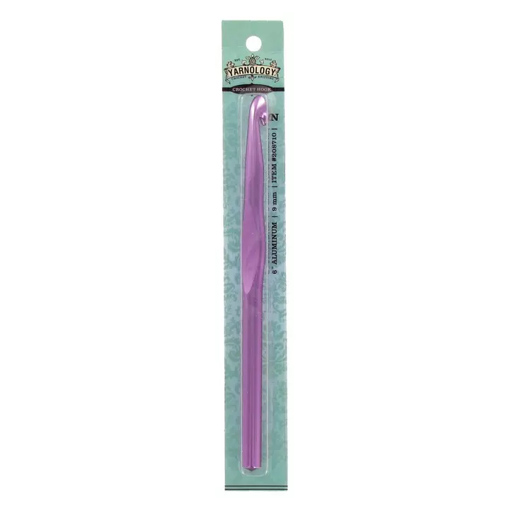
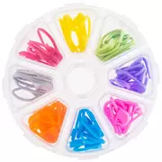
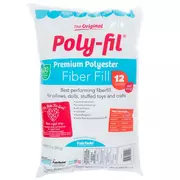
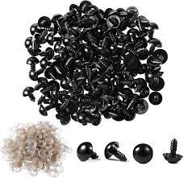
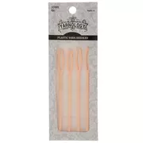

Materials
The materials needed for this project of the Jumbo Turtle are:
Yarn - 2 Colors (Recommended to have at least 4 skeins of the body color and 2 skein of the shell color)(Hobby Lobby)


Crochet Hook - I used a 9mm (Hobby Lobby or Amazon)

Stitch Markers (Hobby Lobby or Amazon)

Stuffing - I use Poly-Fil for all my projects (Walmart or Hobby Lobby)

Safety Eyes - 12mm (Amazon)

Yarn Needle for sewing (Hobby Lobby or Amazon)

A POSITIVE MINDSET!!!